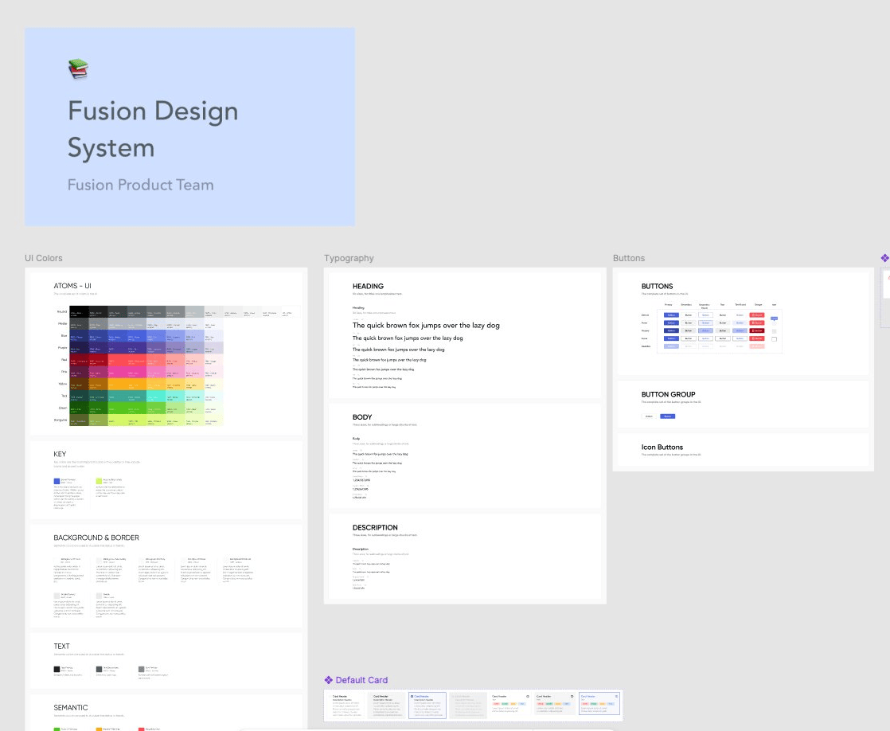
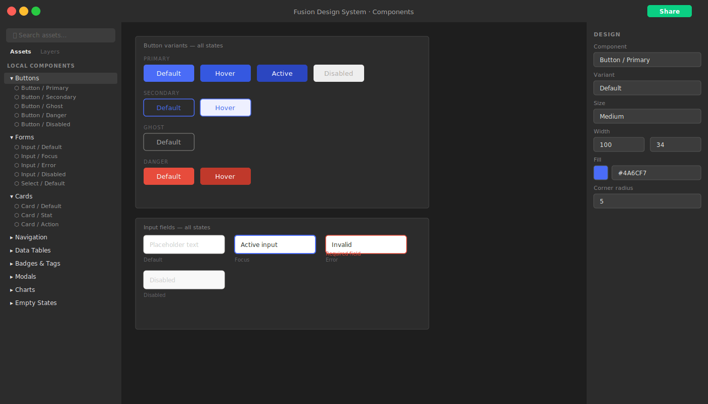
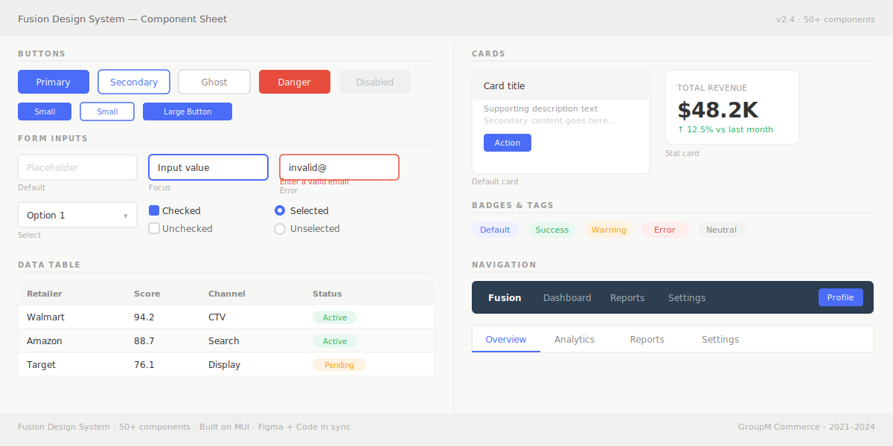
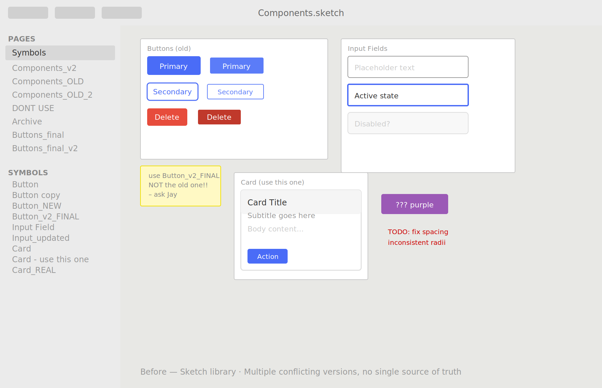
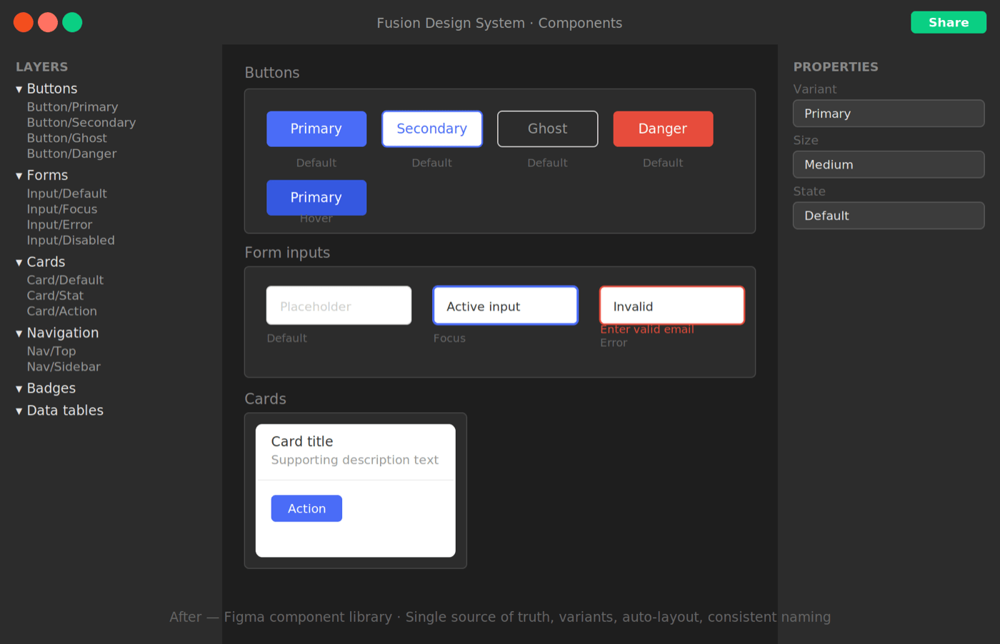
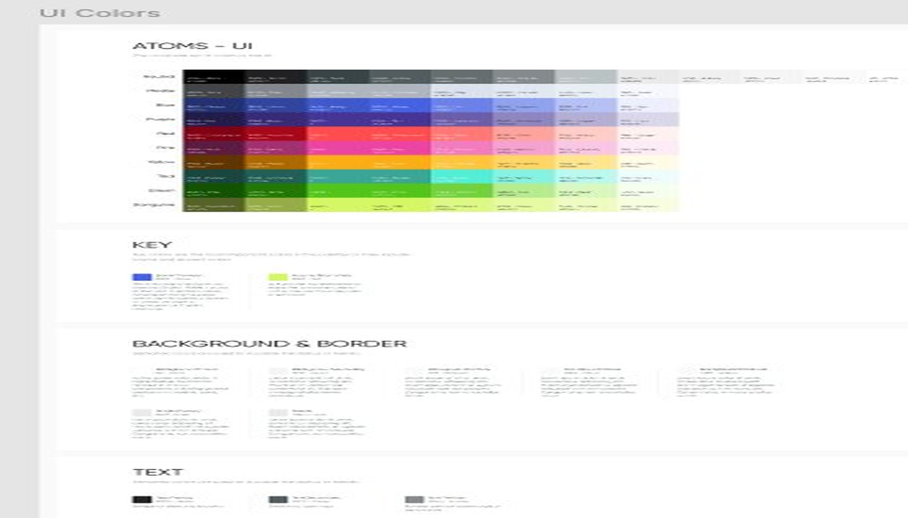

Design System
Figma
Component Library
Fusion Design System
A Figma component library and token system built from scratch on top of MUI — powering 6 applications over 3 years, including a full Sketch-to-Figma migration and multi-brand theming.
Apps powered
6 applications

Impact at a glance
50+
Components powering 6 applications
3 yrs
Maintained and scaled as the sole designer
0
Product downtime during the Sketch → Figma migration
Client names have been omitted to respect confidentiality agreements.
The problem
Six apps. No shared language.
When I joined GroupM, six products were being built by separate teams with no shared component library. Every designer was reinventing buttons, forms, and data tables independently — creating inconsistency and slowing down every new feature.
The system also lived in Sketch, which the team had outgrown. Getting the migration approved took six months. The product and tech manager used Sketch himself — he liked being able to tinker in it directly. The case I had to make wasn't about Figma's feature list; it was about what the team needed to move faster. He eventually came around, and once the migration happened, everything else followed.
Foundation
Building on MUI, not against it.
Engineering was already using MUI as their component framework. Rather than design components that would require custom engineering effort, I built the system directly on top of MUI — extending its theming layer for GroupM's brand rather than replacing it.
This meant every component in Figma had a 1:1 counterpart in code — no translation gap between what was designed and what shipped. Handoffs became faster and design debt shrank significantly.

Components
50+ components covering the full product surface.
The library was structured into categories so designers could find what they needed quickly and engineers could map directly to their codebase.
Buttons
Primary, secondary, ghost, icon — all states
Forms
Inputs, selects, checkboxes, radio, date pickers
Navigation
Navbars, tabs, breadcrumbs, sidebars
Data tables
Sortable, filterable, paginated, with row actions
Cards
Content, stat, action, and metric card variants
Modals & Drawers
Confirmation, form, and detail panel patterns
Badges & Tags
Status indicators, labels, category chips
Charts
Wrappers for Nivo chart types used across Fusion
Empty states
No data, error, loading, and onboarding patterns

Migration
Sketch → Figma without breaking anything.
The migration wasn't just a file transfer — it was a full rebuild. Every component was recreated using Figma's auto-layout and variants system, making them more flexible and maintainable than their Sketch equivalents.
01
Audit
Inventory every existing component
Catalogued all Sketch components in use across six products — documenting variants, states, and usage patterns before touching anything in Figma.
02
Rebuild
Recreate in Figma with auto-layout and variants
Built each component from scratch using Figma's native systems — not a Sketch import. This meant cleaner structure, proper constraints, and components that actually behaved correctly.
03
Parallel period
Both files live simultaneously
Ran both Sketch and Figma libraries in parallel while teams migrated at their own pace. No team was forced off Sketch before they were ready.
04
Deprecation
Sketch retired — Figma is the source of truth
Once all six product teams had migrated, the Sketch library was officially deprecated. Zero product downtime across the entire transition.
Before — Sketch

Symbol-based components with overrides — harder to maintain, inconsistent across files, and difficult to document reliably.
After — Figma

Rebuilt natively with auto-layout and variants — flexible, well-documented, and handoff-ready across all six product teams.
Tokens & theming
One system, multiple brand expressions.
Design tokens — for color, typography, spacing, and elevation — were structured so that swapping a theme didn't require rebuilding anything. This became critical when GroupM needed to white-label the platform for client-facing use.
The token layer made that a configuration change, not a redesign. A new client theme could be applied in hours rather than weeks.

Reflections
What I took from this project.
Systems thinking is design thinking
Building a design system forced me to think above any individual screen — about how decisions compound and how consistency is actually maintained over time.
Advocacy is part of the job
Six months to get one approval taught me how to make a case for design investment in business terms, not just design ones.
Documentation is a product
The best component in the world is useless if nobody knows how to use it. Writing clear usage guidelines was as important as building the components.
What I'd do differently
Involve engineering in naming conventions earlier. Several token names had to be renamed after launch because they conflicted with how engineers thought about the same concepts.